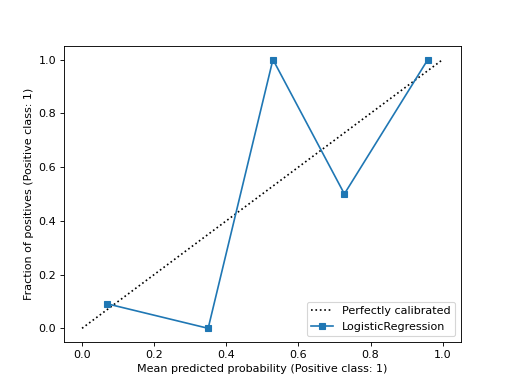
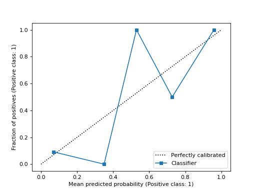

sklearn.calibration.CalibrationDisplay¶
- class sklearn.calibration.CalibrationDisplay(prob_true, prob_pred, y_prob, *, estimator_name=None, pos_label=None)¶
Calibration curve (also known as reliability diagram) visualization.
It is recommended to use
from_estimatororfrom_predictionsto create aCalibrationDisplay. All parameters are stored as attributes.Read more about calibration in the User Guide and more about the scikit-learn visualization API in Visualizations.
New in version 1.0.
- Parameters:
- prob_truendarray of shape (n_bins,)
The proportion of samples whose class is the positive class (fraction of positives), in each bin.
- prob_predndarray of shape (n_bins,)
The mean predicted probability in each bin.
- y_probndarray of shape (n_samples,)
Probability estimates for the positive class, for each sample.
- estimator_namestr, default=None
Name of estimator. If None, the estimator name is not shown.
- pos_labelint, float, bool or str, default=None
The positive class when computing the calibration curve. By default,
estimators.classes_[1]is considered as the positive class.New in version 1.1.
- Attributes:
- line_matplotlib Artist
Calibration curve.
- ax_matplotlib Axes
Axes with calibration curve.
- figure_matplotlib Figure
Figure containing the curve.
See also
calibration_curveCompute true and predicted probabilities for a calibration curve.
CalibrationDisplay.from_predictionsPlot calibration curve using true and predicted labels.
CalibrationDisplay.from_estimatorPlot calibration curve using an estimator and data.
Examples
>>> from sklearn.datasets import make_classification >>> from sklearn.model_selection import train_test_split >>> from sklearn.linear_model import LogisticRegression >>> from sklearn.calibration import calibration_curve, CalibrationDisplay >>> X, y = make_classification(random_state=0) >>> X_train, X_test, y_train, y_test = train_test_split( ... X, y, random_state=0) >>> clf = LogisticRegression(random_state=0) >>> clf.fit(X_train, y_train) LogisticRegression(random_state=0) >>> y_prob = clf.predict_proba(X_test)[:, 1] >>> prob_true, prob_pred = calibration_curve(y_test, y_prob, n_bins=10) >>> disp = CalibrationDisplay(prob_true, prob_pred, y_prob) >>> disp.plot() <...>
Methods
from_estimator(estimator, X, y, *[, n_bins, ...])Plot calibration curve using a binary classifier and data.
from_predictions(y_true, y_prob, *[, ...])Plot calibration curve using true labels and predicted probabilities.
plot(*[, ax, name, ref_line])Plot visualization.
- classmethod from_estimator(estimator, X, y, *, n_bins=5, strategy='uniform', pos_label=None, name=None, ref_line=True, ax=None, **kwargs)¶
Plot calibration curve using a binary classifier and data.
A calibration curve, also known as a reliability diagram, uses inputs from a binary classifier and plots the average predicted probability for each bin against the fraction of positive classes, on the y-axis.
Extra keyword arguments will be passed to
matplotlib.pyplot.plot.Read more about calibration in the User Guide and more about the scikit-learn visualization API in Visualizations.
New in version 1.0.
- Parameters:
- estimatorestimator instance
Fitted classifier or a fitted
Pipelinein which the last estimator is a classifier. The classifier must have a predict_proba method.- X{array-like, sparse matrix} of shape (n_samples, n_features)
Input values.
- yarray-like of shape (n_samples,)
Binary target values.
- n_binsint, default=5
Number of bins to discretize the [0, 1] interval into when calculating the calibration curve. A bigger number requires more data.
- strategy{‘uniform’, ‘quantile’}, default=’uniform’
Strategy used to define the widths of the bins.
'uniform': The bins have identical widths.'quantile': The bins have the same number of samples and depend on predicted probabilities.
- pos_labelint, float, bool or str, default=None
The positive class when computing the calibration curve. By default,
estimators.classes_[1]is considered as the positive class.New in version 1.1.
- namestr, default=None
Name for labeling curve. If
None, the name of the estimator is used.- ref_linebool, default=True
If
True, plots a reference line representing a perfectly calibrated classifier.- axmatplotlib axes, default=None
Axes object to plot on. If
None, a new figure and axes is created.- **kwargsdict
Keyword arguments to be passed to
matplotlib.pyplot.plot.
- Returns:
- display
CalibrationDisplay. Object that stores computed values.
- display
See also
CalibrationDisplay.from_predictionsPlot calibration curve using true and predicted labels.
Examples
>>> import matplotlib.pyplot as plt >>> from sklearn.datasets import make_classification >>> from sklearn.model_selection import train_test_split >>> from sklearn.linear_model import LogisticRegression >>> from sklearn.calibration import CalibrationDisplay >>> X, y = make_classification(random_state=0) >>> X_train, X_test, y_train, y_test = train_test_split( ... X, y, random_state=0) >>> clf = LogisticRegression(random_state=0) >>> clf.fit(X_train, y_train) LogisticRegression(random_state=0) >>> disp = CalibrationDisplay.from_estimator(clf, X_test, y_test) >>> plt.show()

- classmethod from_predictions(y_true, y_prob, *, n_bins=5, strategy='uniform', pos_label=None, name=None, ref_line=True, ax=None, **kwargs)¶
Plot calibration curve using true labels and predicted probabilities.
Calibration curve, also known as reliability diagram, uses inputs from a binary classifier and plots the average predicted probability for each bin against the fraction of positive classes, on the y-axis.
Extra keyword arguments will be passed to
matplotlib.pyplot.plot.Read more about calibration in the User Guide and more about the scikit-learn visualization API in Visualizations.
New in version 1.0.
- Parameters:
- y_truearray-like of shape (n_samples,)
True labels.
- y_probarray-like of shape (n_samples,)
The predicted probabilities of the positive class.
- n_binsint, default=5
Number of bins to discretize the [0, 1] interval into when calculating the calibration curve. A bigger number requires more data.
- strategy{‘uniform’, ‘quantile’}, default=’uniform’
Strategy used to define the widths of the bins.
'uniform': The bins have identical widths.'quantile': The bins have the same number of samples and depend on predicted probabilities.
- pos_labelint, float, bool or str, default=None
The positive class when computing the calibration curve. By default,
estimators.classes_[1]is considered as the positive class.New in version 1.1.
- namestr, default=None
Name for labeling curve.
- ref_linebool, default=True
If
True, plots a reference line representing a perfectly calibrated classifier.- axmatplotlib axes, default=None
Axes object to plot on. If
None, a new figure and axes is created.- **kwargsdict
Keyword arguments to be passed to
matplotlib.pyplot.plot.
- Returns:
- display
CalibrationDisplay. Object that stores computed values.
- display
See also
CalibrationDisplay.from_estimatorPlot calibration curve using an estimator and data.
Examples
>>> import matplotlib.pyplot as plt >>> from sklearn.datasets import make_classification >>> from sklearn.model_selection import train_test_split >>> from sklearn.linear_model import LogisticRegression >>> from sklearn.calibration import CalibrationDisplay >>> X, y = make_classification(random_state=0) >>> X_train, X_test, y_train, y_test = train_test_split( ... X, y, random_state=0) >>> clf = LogisticRegression(random_state=0) >>> clf.fit(X_train, y_train) LogisticRegression(random_state=0) >>> y_prob = clf.predict_proba(X_test)[:, 1] >>> disp = CalibrationDisplay.from_predictions(y_test, y_prob) >>> plt.show()

- plot(*, ax=None, name=None, ref_line=True, **kwargs)¶
Plot visualization.
Extra keyword arguments will be passed to
matplotlib.pyplot.plot.- Parameters:
- axMatplotlib Axes, default=None
Axes object to plot on. If
None, a new figure and axes is created.- namestr, default=None
Name for labeling curve. If
None, useestimator_nameif notNone, otherwise no labeling is shown.- ref_linebool, default=True
If
True, plots a reference line representing a perfectly calibrated classifier.- **kwargsdict
Keyword arguments to be passed to
matplotlib.pyplot.plot.
- Returns:
- display
CalibrationDisplay Object that stores computed values.
- display
Examples using sklearn.calibration.CalibrationDisplay.from_estimator¶

Probability Calibration curves